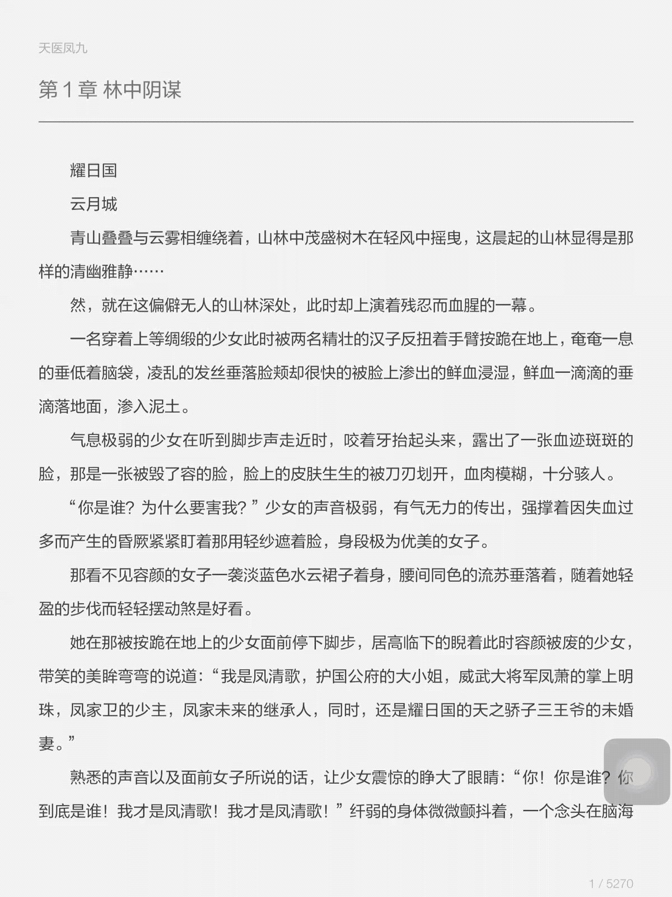
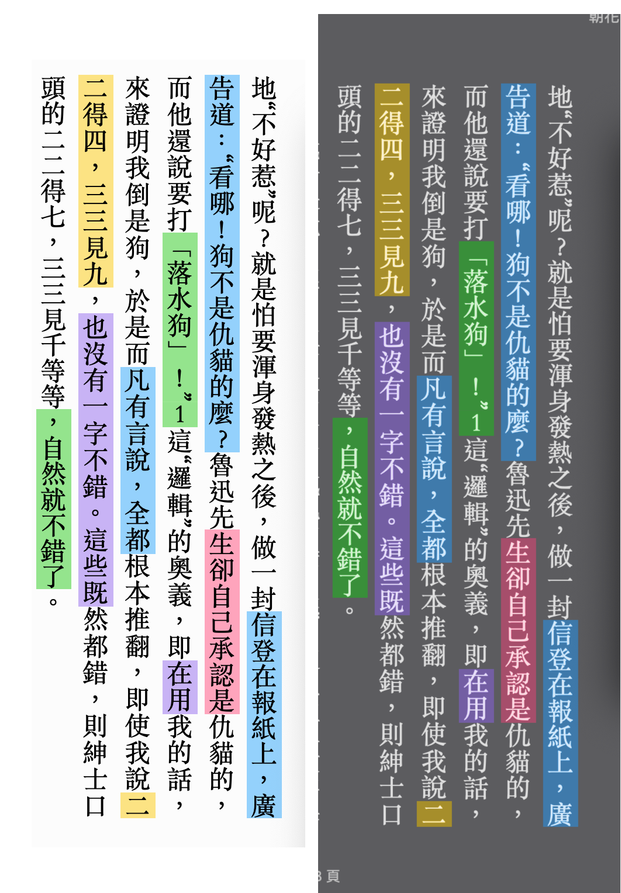
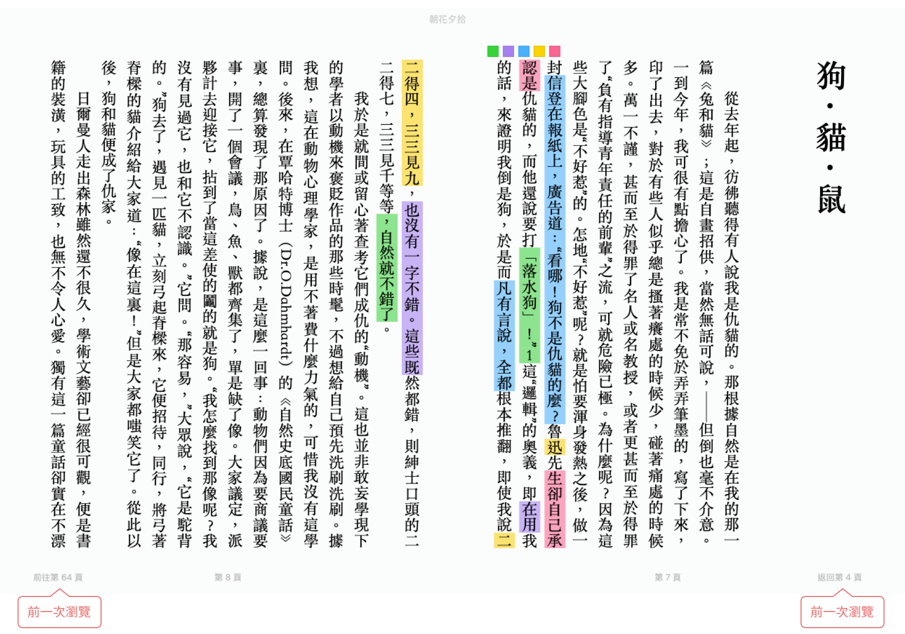
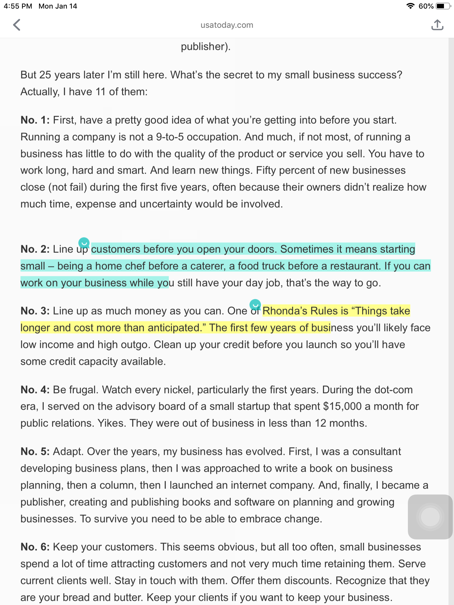
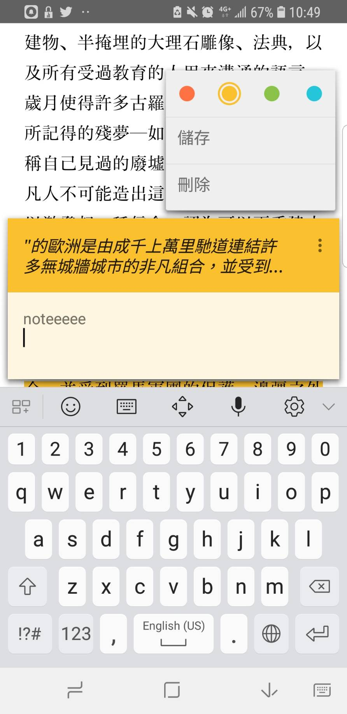

Annotation
Jan 14, 2019參考-電子書 app : iBook, readmoo, google 圖書, 多看閱讀
參考-有相關功能的其他 app : liner
1. 選取文字 + 操作
選取文字後
彈出功能列
多看 (操作：選字>劃線按鈕>紫色按鈕)

直接highlight (預設使用者是要畫螢光筆)
功能列層級：預設使用者會希望先用哪些功能？
限制：小尺寸螢幕一次只能顯示部分功能，哪些要排在最前面？
- 螢光筆
2. Note
style: 底色? 底線?
限制：深淺 theme 上的顏色與文字清晰度都要考慮到
ibook: 白底與灰底的螢光筆顏色調整

有無提示有筆記 & 形式
無筆記提示
有筆記提示
ibook：便利貼

liner：前方顯示小泡泡

新增與移除筆記
編輯時需要知道筆記依附於哪段文字
google 圖書：card 形式，可移動
